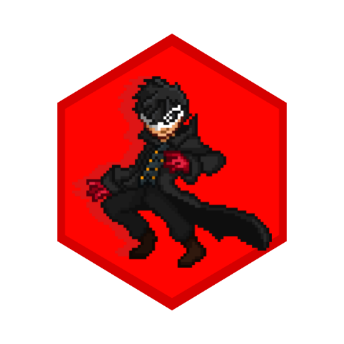
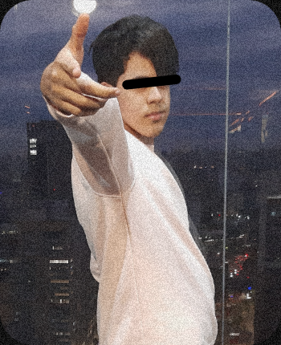

I WILL REVEAL YOUR TRUE FORM
Aqui será exposto tudo aquilo que o dono deste Palacío tem a oferecer. Se apronte e vamos encontrar o TESOURO

CONHECIMENTOS
PROGRAMAÇÃO
Entendimento Básico de JAVA, HTML, CSS, JAVASCRIPT e NEO4J (Em Breve AndroidStudio)
ARQUITETURA COMPUTACIONAL
Entendimento sobre componentes de uma máquina, montagem e manutenção do Hardware
SOCIAL
Nem só de código vive o homem, por isso o individúo possui capacidades de lidar com quase qualquer ambiente social proposto, apresentando características tanto de subordinado operador quanto Líder. MULTIFUNCIONAL

IDENTIFICAÇÃO DO ALVO
NOME: Victor Turial
IDADE: 20 anos
GÊNERO: Masculino
CARACTERÍSTICAS: Pardo, 178cm de altura, 80KG, Cabelo cacheado preto (antes: Liso)
GOSTOS: Detém apreço pela mídia e cultura japonesa, pode ser observado nas vestes e objetos portados